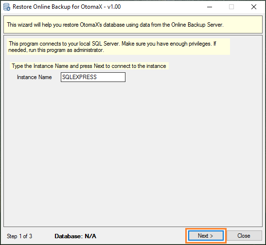
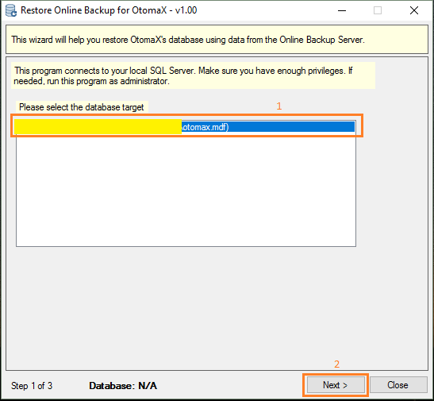
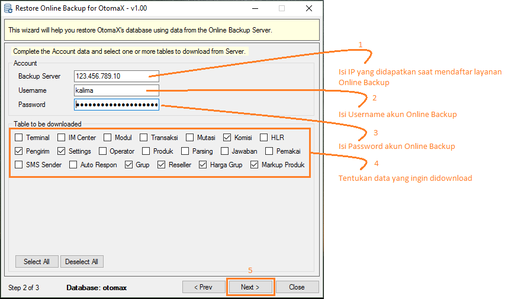

Restore Data Online Backup
Sebuah bencana tentu tak ada yang dapat menduga, kalaupun terjadi harus siap dengan solusinya. Salah satu bencana yang paling tidak diinginkan ialah kehilangan data, disebabkan kerusakan hardware, bencana alam, pencurian komputer server atau lainnya. Bagi yang mendaftar layanan Online Backup dapat sedikit merasa lega, karena kalaupun hal itu terjadi masih punya data di penyimpanan Online Backup. Kalaupun belum mendaftar masih belum terlambat dan dapat mendaftar klik disini. Lalu bagaimana sih prosedur pengambilan data dari Online Backup?...
Untuk mengambil data dari Online Backup dapat dilakukan secara mandiri dengan menggunakan modul khusus yang telah disediakan OtomaX, bernama OB_Restore. Proses download, proses restore data semua dikerjakan oleh modul tanpa perlu tehnik khusus. Anda cukup menjalankan modul tersebut serta mengikuti instruksi - instruksinya, dan kemudian database Anda akan otomatis terbentuk sendiri.
PERHATIAN: Seyogyanya restore data dari Online Backup hanya dilakukan ketika database mengalami gendala. Apabila normal, tidak perlu dilakukan.
Berikut ini langkah demi langkah download dan restore data dari Online Backup:
- Pastikan di komputer telah terinstall OtomaX. Kalau belum, klik disini.
- Pastikan telah terdapat modul OB_Restore di komputer Anda. Kalau belum, download dahulu klik disini (1 bundle dengan modul OtomaX Online Backup), dan kemudian extract.
- Pilih modul OB_Restore -> klik kanan -> klik Run as Administrator -> klik Yes.
-
Akan muncul jendela seperti di bawah ini dan klik Next.

-
Pilih database otomax dan klik Next.

-
Masukkan akun Online Backup Anda dan tentukan data yang ingin didownload dan direstore sesuai
petunjuk pada gambar di bawah ini, kemudian klik Next.

- Akan terjadi proses download data dari Online Backup, tunggu beberapa saat hingga usai.
- Tentukan data yang ingin direstore, kemudian klik Restore -> klik OK. Akan terjadi proses restore data, tunggu hingga selesai.
- Klik Close. Database Anda telah terbentuk.
- Selesai.
Begitulah tata cara restore data dari Online Backup. Mengingat pentingnya akun Online Backup saat akan melakukan restore data DISARANKAN AGAR DISIMPAN DI BEBERAPA TEMPAT BERBEDA DAN AMAN, supaya ketika dibutuhkan dapat digunakan sebagaimana mestinya.